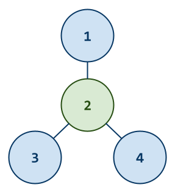

The goal of this homework assignment is to allow you to explore representing graphs using either an adjacency matrix or an adjacency list, and traversing using either depth first search or breadth first search. Once you have a few graph reading utilities implemented, you will employ them to solve two programming challenges that require constructing graphs and then examining the vertices and edges within the graph.
For this assignment, you are to do your work in the homework12 folder of
your assignments GitHub repository and push your work by noon,
Wednesday, November 29.
Before starting this homework assignment, you should first perform a git
pull to retrieve any changes in your remote GitHub repository:
$ cd path/to/repository # Go to assignments repository
$ git switch master # Make sure we are in master branch
$ git pull --rebase # Get any remote changes not present locally
Next, create a new branch for this assignment:
$ git checkout -b homework12 # Create homework12 branch and check it out
To help you get started, the instructor has provided you with the following skeleton code:
# Go to assignments repository
$ cd path/to/assignments/repository
# -----------------------------------------------------
# MAKE SURE YOU ARE NOT INSIDE THE homework12 DIRECTORY
# -----------------------------------------------------
# MAKE SURE YOU ARE AT THE TOP-LEVEL DIRECTORY
# -----------------------------------------------------
# Download skeleton code tarball
$ curl -LO https://www3.nd.edu/~pbui/teaching/cse.20312.fa23/static/tar/homework12.tar.gz
# Extract skeleton code tarball
$ tar xzvf homework12.tar.gz
Once downloaded and extracted, you should see the following files in your
homework12 directory:
homework12
\_ Makefile # This is the Makefile for building all the assignment artifacts
\_ center_star.py # This is the Python script for the Center Star programming challenge
\_ graph.py # This is the Python module for the Graph module
\_ reddit_groups.py # This is the Python script for the Reddit Groups programming challenge
Now that the files are extracted into the homework12 folder, you can
commit them to your git repository:
# Go into homework12 folder
$ cd homework12
# Add and commit initial skeleton files
$ git add Makefile # Mark changes for commit
$ git add *.py
$ git commit -m "Homework 12: Initial Import" # Record changes
After downloading and extracting these files, you can run the make command
to run the tests.
# Run all tests (will trigger automatic download)
$ make
You will notice that the Makefile downloads three additional test scripts:
homework12
\_ center_star_test.py # This is the Python unit test for the Center Star programming challenge
\_ graph_test.py # This is the Python unit test for the Graph module
\_ reddit_groups_test.py # This is the Python unit test for the Reddit Groups programming challenge
In addition to the embedded doctests in the skeleton code, you will be using these unit tests to verify the correctness and behavior of your code.
The test scripts are automatically downloaded by the Makefile, so any
modifications you do to them will be lost when you run make again.
Likewise, because they are automatically downloaded, you do not need to add
or commit them to your git repository.
The details on what you need to implement for this assignment are described in the following sections.
For the first activity, you are to implement a few utility functions that read a stream of graphs in the following format:
4 # Number of vertices
3 # Number of edges
1 2 # Edge 1
2 3 # Edge 2
4 2 # Edge 3
That is, each graph consists of an initial line that indicates the number
of vertices in the graph, followed by a second line with the number of
edges in the graph. After this, each subsequent line is an edge in
the graph in the form of source andtarget.
You will need to implement functions that read such streams of graphs into either an adjacency matrix or an adjacency list representation as shown above.
For this assignment, we will be using the following types for our adjacency matrix and adjacency list:
AdjacencyMatrix = list[list[int]]
AdjacencyList = dict[int, list[int]]
Note: For this assignment, assume that all graphs are undirected.
graph.py¶The graph.py Python script contains the graph utility functions you
are to implement for this activity:
read_adjacency_matrix(stream=sys.stdin) -> AdjacencyMatrix
This function reads the graph from the
streaminto an adjacency matrix.
read_adjacency_list(stream=sys.stdin) -> AdjacencyList
This function reads the graph from the
streaminto an adjacency list.
read_adjacency_lists(stream=sys.stdin) -> Iterator[AdjacencyList]
This function generates one adjacency list at a time by reading graphs from the
stream.
Use stream.readline() to read one line from the stream.
Use a try/except to detect the end of the stream.
Use a list comprehension or a dict comprehension to initialize the appropriate graph representation.
Use the walrus operator in read_adjacency_lists:
while graph := read_adjacency_list(stream):
# TODO
You may notice that in addition to the usual comments and TODOs, the docstrings of each method also contains a few doctests.
You are not to modify these doctests and must keep them in-place. They are used to verify the correctness of your code.
Your code goes below the docstrings, where the TODO and pass commands are (you may remove the pass once you complete the method).
As you implement graph.py, you can use the provided doctests to verify the
correctness of your code:
# Run doctests
$ python3 -m doctest graph.py -v
...
3 items passed all tests:
1 tests in graph.read_adjacency_list
1 tests in graph.read_adjacency_lists
1 tests in graph.read_adjacency_matrix
3 tests in 4 items.
3 passed and 0 failed.
Test passed.
You can also use make to run both the doctests and the unit tests:
# Run unit tests (and doctests)
$ make test-graph
Testing graph ...
test_00_doctest (__main__.GraphTests) ... ok
test_01_mypy (__main__.GraphTests) ... ok
test_02_read_adjacency_matrix (__main__.GraphTests) ... ok
test_03_read_adjacency_list (__main__.GraphTests) ... ok
test_04_read_adjacency_lists (__main__.GraphTests) ... ok
Score 3.00 / 3.00
Status Success
----------------------------------------------------------------------
Ran 5 tests in 0.048s
OK
To just run the unit tests, you can do the following:
# Run unit tests
$ ./graph_test.py -v
...
To run a specific unit test, you can specify the method name:
# Run only mypy unit test
$ ./graph_test.py -v GraphTests.test_01_mypy
...
You should practice iterative development. That is, rather than writing a bunch of code and then debugging it all at once, you should concentrate on one function at a time and then test that one thing at a time. The provided unit tests allow you to check on the correctness of the individual functions without implementing everything at once. Take advantage of this and build one thing at a time.

For this activity, you are to use your graph utilities to solve the following programming challenge:
Given an undirected star graph consisting of
Nvertices labeled from1toN, determine which vertex is the center of the star graph (ie. which vertex has exactlyN - 1edges that connect the center vertex with every other vertex in the star graph).For each graph, you are to output the center vertex of the star graph or output that there is no center.
Here is an example of center_star.py executing as a script:
$ ./center_star.py
4
3
1 2
2 3
4 2
Vertex 2 is the center
center_star.py¶The center_star.py Python script contains the functions you are to
complete to solve this programming challenge:
find_center(graph: AdjacencyMatrix) -> int
This function finds the center of the star graph and returns the vertex if it exists, otherwise it returns
0.
main(stream=sys.stdin) -> None
This function reads a graph from the
streaminto an adjacency matrix, determines which vertex is the center of the star graph, and prints out the center vertex if it exists.
read_adjacency_matrix.
As you implement center_star.py, you can use the provided doctests to verify
the correctness of your code:
# Run doctests
$ python3 -m doctest center_star.py -v
...
2 items passed all tests:
1 tests in center_star.find_center
1 tests in center_star.main
2 tests in 3 items.
2 passed and 0 failed.
Test passed
You can also use make to run both the doctests and the unit tests:
# Run unit tests (and doctests)
$ make test-center-star
Testing center_star ...
test_00_doctest (__main__.CenterStarTests) ... ok
test_01_mypy (__main__.CenterStarTests) ... ok
test_02_find_center (__main__.CenterStarTests) ... ok
test_03_main (__main__.CenterStarTests) ... ok
Score 3.00 / 3.00
Status Success
----------------------------------------------------------------------
Ran 4 tests in 0.044s
OK
To just run the unit tests, you can do the following:
# Run unit tests
$ ./center_star_test.py -v
...
To run a specific unit test, you can specify the method name:
# Run only mypy unit test
$ ./center_star_test.py -v CenterStarTests.test_01_mypy
...
For this activity, you are to use your graph utilities to solve the following programming challenge:
Professor Tim Weninger is not only handy with fixing broken pipes but also is an expert in social networks. In particular, Tim studies Reddit and is interested in how people use the social media website.
For this problem, he needs your help in determining how many isolated groups there are in a graph of users. To keep things anonymous, he assigns each user a number and then forms links between users who share a subreddit.
Given graphs such as those on above, you are to print out the members of each group (in sorted order).
Here is an example of reddit_groups.py executing as a script:
$ ./reddit_groups.py
4
3
1 2
2 3
4 1
Graph 1:
1 2 3 4
4
2
1 2
3 4
Graph 2:
1 2
3 4
reddit_groups.py¶The reddit_groups.py Python script contains the functions you are to
complete to solve this programming challenge:
walk_graph(graph: AdjacencyList, origin: int) -> set[int]
This function traverses the graph starting from the
originand returns the set of all visited vertices.
find_groups(graph: AdjacencyList) -> Iterator[list[int]]
This function generates all the isolated groups in the
graph.
main(stream=sys.stdin) -> None
This function reads a graph from the
streaminto an adjacency list, finds the isolated groups in the graph, and then prints each group out in sorted order.
read_adjacency_lists.
As you implement reddit_groups.py, you can use the provided doctests to verify
the correctness of your code:
# Run doctests
$ python3 -m doctest reddit_groups.py -v
...
3 items passed all tests:
1 tests in reddit_groups.find_groups
1 tests in reddit_groups.main
1 tests in reddit_groups.walk_graph
3 tests in 4 items.
3 passed and 0 failed.
Test passed.
You can also use make to run both the doctests and the unit tests:
# Run unit tests (and doctests)
$ make test-reddit-groups
Testing reddit_groups ...
test_00_doctest (__main__.RedditGroupsTests) ... ok
test_01_mypy (__main__.RedditGroupsTests) ... ok
test_02_walk_graph (__main__.RedditGroupsTests) ... ok
test_03_find_groups (__main__.RedditGroupsTests) ... ok
test_04_main (__main__.RedditGroupsTests) ... ok
Score 4.00 / 4.00
Status Success
----------------------------------------------------------------------
Ran 5 tests in 0.046s
OK
To just run the unit tests, you can do the following:
# Run unit tests
$ ./reddit_groups_test.py -v
...
To run a specific unit test, you can specify the method name:
# Run only mypy unit test
$ ./reddit_groups_test.py -v RedditGroupsTests.test_01_mypy
...
Once you have completed all the activities above, you are to complete the following reflection quiz:
As with Reading 01, you will need to store your answers in a
homework12/answers.json file. You can use the form above to generate the
contents of this file, or you can write the JSON by hand.
To check your quiz directly, you can use the check.py script:
$ ../.scripts/check.py
Checking homework12 quiz ...
Q1 0.30
Q2 0.40
Q3 0.20
Q4 0.80
Q5 0.30
Score 2.00 / 2.00
Status Success
For extra credit, you are to solve the following LeetCode problem in Python.
To receive credit, you must pass on LeetCode and achieve an Accepted submission.
To get credit for this Leet Point, show your solution and the LeetCode acceptance page to a TA to verify (or attached a screenshot with both to your Pull Request). You have up until two days after this assignment is due to verify your Leet Point.
Remember that you can always forgo this Leet Point for two extra days to do the homework. That is, if you need an extension, you can simply skip the Leet Point and you will automatically have until Friday to complete the assignment for full credit.
Just leave a note on your Pull Request of your intentions.
To submit your assignment, please commit your work to the homework12 folder
of your homework12 branch in your assignments GitHub repository:
#-----------------------------------------------------------------------
# Make sure you have already completed Activity 0: Preparation
#-----------------------------------------------------------------------
...
$ git add graph.py # Mark changes for commit
$ git commit -m "Homework 12: Activity 1" # Record changes
...
$ git add center_star.py # Mark changes for commit
$ git commit -m "Homework 12: Activity 2" # Record changes
...
$ git add reddit_groups.py # Mark changes for commit
$ git commit -m "Homework 12: Activity 3" # Record changes
...
$ git add answers.json # Mark changes for commit
$ git commit -m "Homework 12: Activity 4" # Record changes
...
$ git push -u origin homework12 # Push branch to GitHub
Remember to create a Pull Request and assign the appropriate TA from the Reading 12 TA List.
DO NOT MERGE your own Pull Request. The TAs use open Pull Requests to keep track of which assignments to grade. Closing them yourself will cause a delay in grading and confuse the TAs.